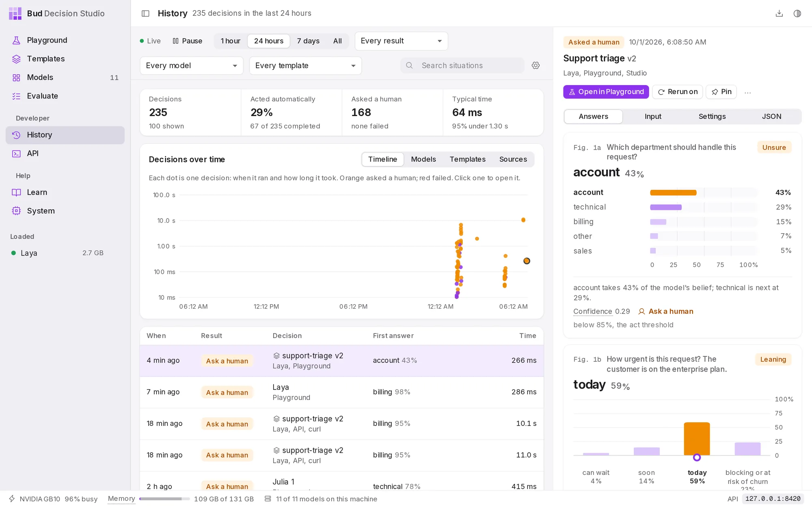
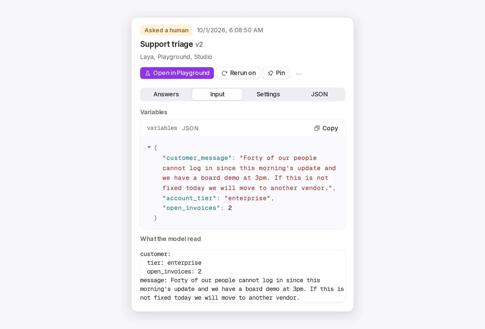
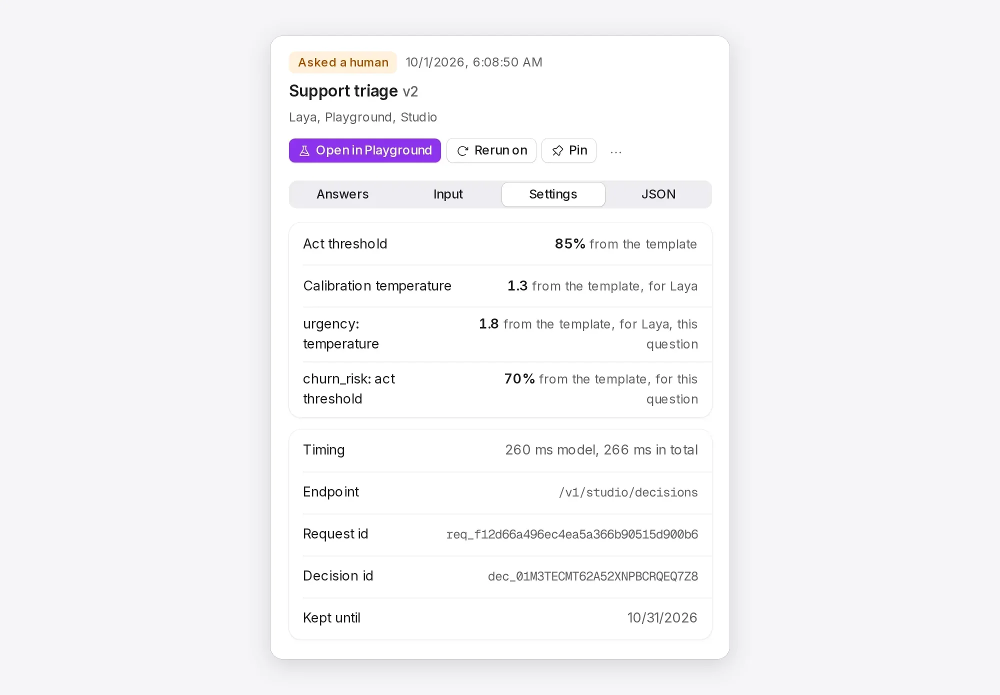
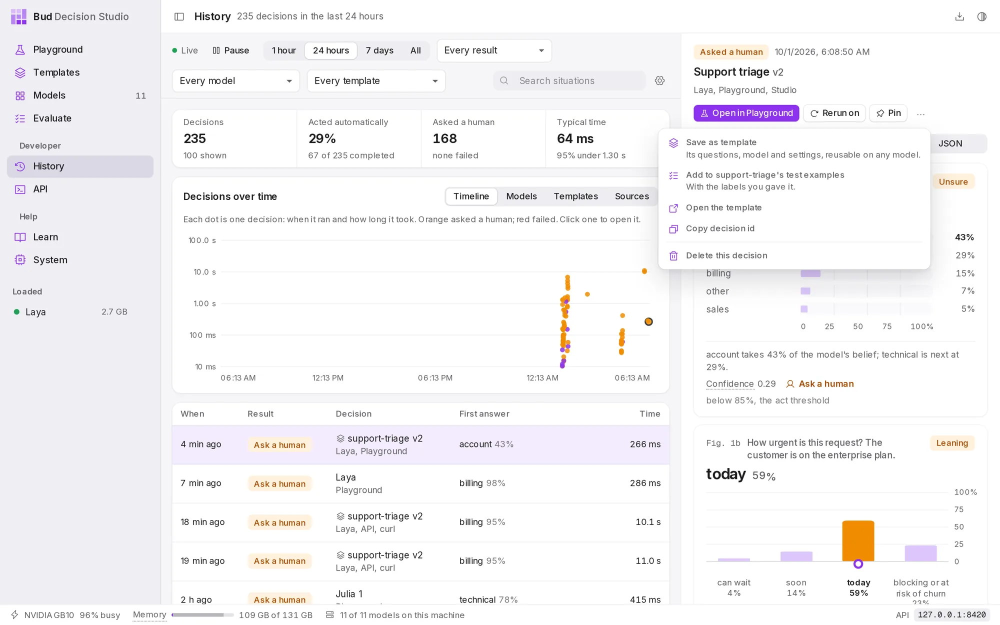
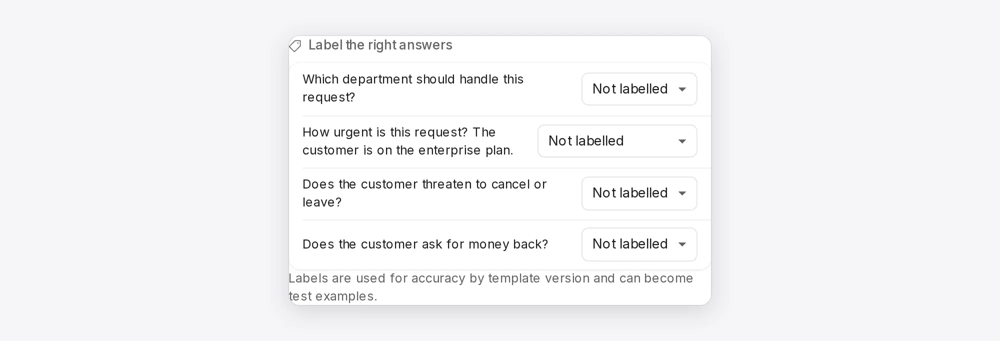
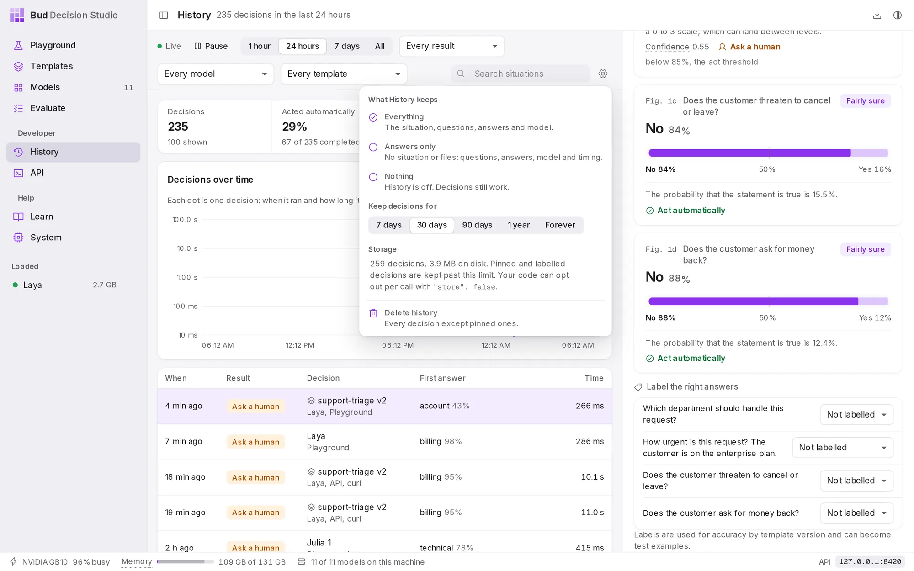

DocsUser manual
History
History keeps every decision the studio makes, wherever it came from: the Playground, Evaluate, your code, an SDK or curl. Use it to see what needed a person, to check answers against the truth, and to turn real decisions into templates and test examples.
The page#
Open History from the sidebar.

Everything stays on your computer, in the studio's database. By default each decision is kept for 30 days, with the situation, the questions, the answers, the model and the timing. What History keeps explains how to change that.
The first time you open History after installing, a note explains that decisions are now saved. Change opens the settings; Got it dismisses the note.
Find decisions#
The bar at the top filters the list, the summary and the chart together:
| Control | Choices |
|---|---|
| Live and Pause | The list refreshes every few seconds while Live. Pause holds it still while you read. |
| Time range | 1 hour, 24 hours, 7 days or All |
| Result | Every result, Needs review (asked a human), Acted automatically, Failed, Labelled, Pinned |
| Model | Every model, or one model |
| Template | Every template, No template, one of your templates, or a starter template |
| Search situations | Finds words in what the model read |
The summary counts the decisions in range, the share that acted automatically, how many asked a human or failed, and the typical time.
The chart has four views. Timeline draws each decision as a dot: across, when it ran; up, how long it took. Violet dots acted, orange ones asked a human, red ones failed; choose a dot to open that decision. Models, Templates and Sources count decisions per model, per template and per source, with how often each acted on its own.
The list shows each decision's time (a pin and a tag mark pinned and labelled decisions), its result (Acted, Ask a human, Failed, or Running for a decision still in progress), the template and version or the model, where it came from, its first answer with its probability, and how long it took. Show older decisions loads more.
Where a decision came from is one of: Playground, API (with the client, such as curl or an SDK), Compare, Order test, Evaluate, Rerun, or Imported (decisions recorded by versions before 0.2.0, moved in when you upgraded).
Read a decision#
Choose a decision in the list. The panel on the right shows its result, when it ran, its template and version (or "Decision without a template"), the model and the source, then four tabs.
Answers redraws every answer exactly as the Playground showed it, with the verdict each question got at the time.
Input shows the variables the caller sent (if the decision used a template) and What the model read: the situation, after the template filled in its variables. Files attached to the decision are listed and open in a new tab while they are kept.

Settings lists the act threshold and calibration temperature the decision was made with, each with where it came from: the request, the template, the template's values for this model, or the studio default. It also lists any questions or options the caller added or skipped, the timing, the endpoint, the request id, the decision id and the date it will be deleted. Choose an id to copy it.

JSON shows the whole decision as the API returns it.
Act on a decision#
The buttons above the tabs:
- Open in Playground loads the decision into the Playground: in its template, with the same variables and per-decision changes, if it used one; otherwise as a free decision with its situation and questions.
- Rerun on runs the same input on a loaded model, the same one or another. The rerun is a new decision, marked Rerun, so you can compare the two.
- Pin keeps the decision past the retention period and size limit. Unpin releases it.
- ... offers Save as template (its questions, model and settings), Add to template's test examples (with the labels you gave it), Open the template, Copy decision id and Delete this decision.

Label the right answers#
Under the answers, Label the right answers lists each question with the answers it allows. Choose the right one; the studio marks the model's answer right or wrong.

Labels feed Accuracy on labels when you compare template versions, and a labelled decision can become a test example in one step (..., then Add to template's test examples). Labelled decisions are kept past the retention period, so the record of what was right is not lost.
Pick one, put in order, rate on a scale and yes or no questions can be labelled here; pick any and estimate a number questions cannot.
What History keeps#
The gear button at the top right of the page opens the History settings.

What History keeps for each decision:
| Choice | Keeps |
|---|---|
| Everything | the situation, the questions, the answers, the model and the timing (the default) |
| Answers only | the questions, answers, model and timing, but not the situation or any files |
| Nothing | nothing at all. Decisions still work; History is simply off. |
Keep decisions for 7 days, 30 days (the default), 90 days, 1 year or for ever. Older decisions are deleted automatically, except pinned and labelled ones. History also stays under a size limit (20 GB by default), removing the oldest decisions first when it is reached.
Storage says how many decisions are kept and how much disk they use. Delete history deletes every decision except pinned ones; templates, test examples and models are not affected.
These settings apply to the whole studio. A template can keep less for its own decisions (see Templates), and so can each call:
| From | How |
|---|---|
| the Playground | turn off Keep this decision in History in the decision settings |
| your code | send "store": false in the request body to keep nothing, or "store": "answers_only" |
| a client that cannot change the body | send the header X-Basal-Store: 0 |
When several of these apply, the most private one wins. Variables a template marks sensitive are never written to History at all. History and privacy covers the rules in detail.
History from code#
Everything on this page is also available through the API: list and filter decisions, fetch one with its input, add labels, rerun, export as JSON lines or CSV, and delete or redact decisions. Each response names the stored decision in the x-basal-decision-id header and says what was kept in x-basal-stored. See History, feedback and statistics.